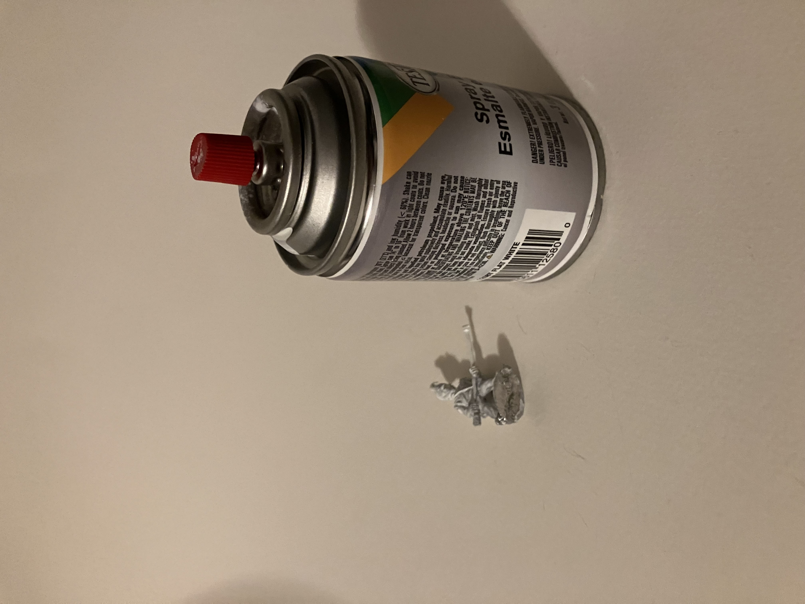

What are Miniatures?
A miniature is a reduced or small scale version of a figure usually used for decoration or gaming. These can vary with historical, fantasy, and antique all being popular.
A miniature is a reduced or small scale version of a figure usually used for decoration or gaming. These can vary with historical, fantasy, and antique all being popular.
This website was created to demonstrate a comprehensive process of painting miniatures. Although there are plenty of professional videos going over detailed demonstrations, there is a lack of a step by step tutorial for beginners trying to get into the hobby. There are three essential steps to painting a miniature: assembling the miniature, priming, and painting. Although for many this does not complete the process for the final display or wargaming, these are the basics to start painting. The first step is the easiest and requires pliers to cut the individual pieces from the sprue, which holds each part of the figure. Once cut, they can be put together with super glue or rubber cement. It is a good idea to file down loose plastic pieces that are left over from the cut. Once done, the figures should be set aside and allowed to dry before the priming step. The priming step should be done outside or in a well ventilated area. Spray paint is the best choice, although the primer can be directly applied with a brush. Basic colors like white, black, or gray should be used to create a base layer for the miniatures. The primer is used to help paints stick to the figure without issue, 1-2 layers should be applied and allowed to dry before the last step. The painting step is the most complicated, but the most fun. It is important to have a variety of paints to allow for a well detailed figure. Depending on the types of figures you have (Warlord Games, Warhammer, Flames of War), paints can be bought directly from the store for the miniatures you are trying to paint. It is important to be slow and methodical for this step, since it takes the most skill to complete. While the first few figures might have a rough paint job, continuous practice will help create well painted and detailed figures over time. Small brushes are the most practical to use while painting miniatures, especially if they are the standard 25 mm. These brushes can be bought at any local paint store or hobby shop and are inexpensive. The most important part is to enjoy the process. The hobby is not the cheapest and takes practice to master. Time and skill comes with each figure painted and like any hobby, the passion continues to grow when you take the time to appreciate the work that is put in. The versatility of miniature and painting allows for buyers to display large scenes or use them for wargaming with friends. Dungeons and Dragons is a perfect example of the blend of taking the time and effort to craft the perfect miniature and having the ability to use it game after game.

The first step of creating any miniature is usually assembly. This requires taking the individual pieces of the figure of the sprue and gluing them together.

The pieces are usually compatible meaning that you are able to crate the figures as you see fit. This can create interesting mixing and matching.
Once put together, the figures are ready to be primed
Priming the miniature is essential in making sure that the paint is able to stick to the figure.
Priming is using a base coat of white or black to create a biding layer to help further layers of paint stick during the next step
Around 1-2 layers should be sprayed on to ensure the miniature is totally covered and ready to be painted over.
The last step is to actually paint the figure. This is the longest process and needs the most attention to detail.

It is best to do one are of the figure or to paint by specific color. It is important to let areas dry before adding a new color or wash to the figure
The last part of the process is adding the smallest details. This depends on the figure and might take longer depending on what is being painted. Dry brushing or a wet wash can be added to create an extra layer of detail